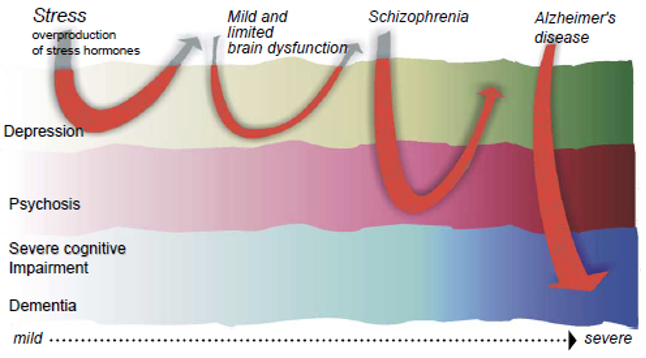
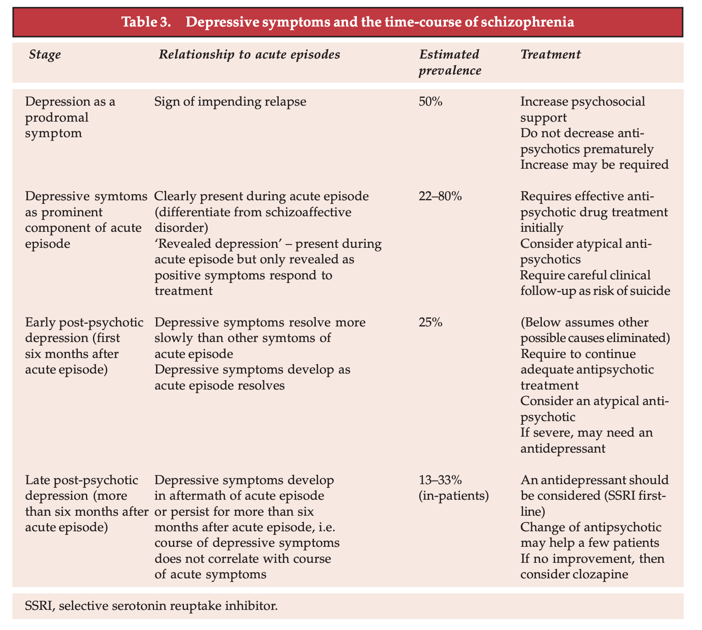

56 조현병에 동반된 우울 증상
56.1 개념과 의의
하이데거는 우울을 “인간이 존재하는 한 언제나 느낄 수 밖에 없는 근본 정서”로 본다. 따라서 우울 자체를 질병으로 볼 수만은 없다. 우울은 상황을 정확히 평가했다는 뜻이기도 하며, 슬픔을 소화해내려는 노력이자 동시에 대인관계를 다지는 의사소통의 한 수단이기도 하다. 정신병리학에서도 우울(depression)이라는 단어는 1) 기분이 저하된 일시적 감정 상태, 2) 원인이 될만한 자극이 없는데도 과도한 기분의 저하가 오래 지속되는 증상으로서의 상태, 3) 기분 저하가 인지 변화, 신체 증상 등과 함께 동반되는 증후군이라는 세 가지 양상 모두를 가리킨다. 조현병 환자 역시 이들 세 가지의 의미의 우울을 겪을 수 있다.[1] 스스로의 상태를 되짚어 보면서 정상적인 우울 반응을 보일 수 있으며, 이와는 질적으로 다른 병적인 우울증을 동반할 수도 있다. 이러한 애매모호함 때문에 우울 증상을 대하는 정신과 의사의 입장이 곤란해진다. 일단 많은 의사들은 조현병 환자를 치료할 때 정신병적 증상을 제거하는데 치중하며, 환자들은 오히려 우울과 무기력에서 벗어나기를 더 바란다.[2] 일부 의사들은 환자가 자신의 병과 그로 인한 장애를 슬퍼한다는 것은, 비로소 부인에서 벗어나 병식을 얻는 첫단계라고 생각한다. 또 다른 의사들은 정신병이 걷히면 등장하는 위계적으로 하위 증상일 뿐이라고 여기기도 한다. 때문에 정신병 증상에서 회복할 때, 아니면 정신병적 삽화의 재발이 임박했을 때 나타나는 것이라 설명한다.
사실 우울 증상은 정동 정신병에서 만큼이나 조현병 경과 중 자주 나타난다. 전구기, 급성기, 관해 직후, 잔류기 등 어느 단계에서나 발생하며, 질병의 경과 및 예후에도 깊은 영향을 미친다. 전통적으로 우울 증상은 세가지 관점으로 이해되어왔다. 첫째는 환자가 자신을 둘러싼 상황에 반응하는 정상적인 반응, 둘째는 조현병의 핵심 증상의 하나로서의 우울, 셋째는 약물 부작용으로서의 우울이다. 그러나 이 밖에도 좀더 복잡한 이해의 틀이 제기되기도 하였는데, 확장된 이해의 틀에는 1) 조현병을 구성하는 증상으로서의 우울증, 2) 독립된 병존 질환으로서의 우울증, 3) 애초에 정동 정신병과 조현병은 질병분류학적으로 구분되지 않는다는 단일 정신병(unitary psychosis) 개념[3] 또는 4) 정동 정신병 - 조현 정동장애 - 조현병으로 이어지는 스펙트럼 등이 포함된다.[4,5]
전통적으로 정신과 의사들은 정신병적 증상을 우울 증상보다 상위에 놓는 위계 개념을 선호해왔다. Häfner 등[6]은 초발 환자를 대상으로 한 추적 관찰 연구에서, 우울은 가장 흔한 전구 증상으로, 정신병적 증상이 출현한 후에야 주요 우울증과 조현병의 감별진단이 가능해진다고 하였다. 그는 우울 반응을 단순히 심리적 반응이라고 보는 대신에, 인간 성격이나 뇌 기능에 근원적으로 자리한 “사전 형성된 반응 양식 (preformed reaction pattern)”의 하나라고 보았다. 그의 이론에 따르면, 정신병과 치매 역시 이러한 사전 형성된 반응 양식의 또 다른 예들이며, 기능 장해가 심해지면서 보다 고위의 반응이 나타나게 된다. 즉 우울증과 조현병은 근본적으로 차이가 나는 독립된 진단명이 아니라, 앞서 열거한 반응 양식 중에서 어떤 것들이 어느 정도의 비율로 나타나느냐에 따라 임상 양상이 달라진다고 하였다.[7]
이러한 사고 방식은 Jackson과 야스퍼스 그리고 크레펠린의 저작에서도 발견할 수 있다. 이들 저자들은 1) 정동, 편집, 히스테리성 유형에서 2) 조현형 유형을 거쳐, 3) 기질적 뇌병변의 순서로 심해지는 정신 질환의 위계적 질서를 믿었다.[8] 이런 식의 착안은 19세기 초에 활동한 Guislain에게서 비롯되었다는 견해도 있다. Guislain</s>1은 “depressive phrénalgie initiale”를 모든 정신질환의 초기 단계로 간주하였다. 모든 정신질환은 정상적인 감정이 우울로 바뀌면서 시작되며, 멜랑콜리를 거쳐 광증의 순서로 이행된다는 주장이었다.
1 Joseph Guislain (1797~1860): 벨기에의 의사. 당시에는 정신과 의사라는 구분이 없었지만 초기 개척자로 여겨진다. Ghent 대학의 생리학 교수로 재직하였으며, 많은 정신과 환자를 돌보았다. 그의 제안을 받아들여 1857년 Ghent 지역에 벨기에 최초의 정신과 병원이 세워졌으며, 이 건물은 현재도 기념관으로 운영되고 있다.
한편 정신역동 이론에서는 조현병의 우울 증상, 특히 정신병후 우울증을 환자가 병식을 획득하면서 보이는 심리적 반응으로 이해한다.[11] 정신치료의 궁극적 목표는 자신의 내면을 이해하고 병식을 획득하는 것으로 우울은 이 과정에서 반드시 겪고 넘어가야 하는 단계이다. Birchwood 등 역시 환자들이 정신병적 경험을 부정적이고 절망적으로 받아들이기 때문에 우울 증상을 일으키는 것이라 생각하였다.[10] 이러한 개념은 유명한 “병식 역설(insight paradox)” 논쟁을 불러왔다. 즉 병식이 높은 환자일수록, 동반된 우울 증상과 심리적 고통이 심하고 삶의 질이 떨어지며, 자살 위험마저 높아진다는 것이다.[12,13] 그러나 이러한 이론은 마치 조현병 환자는 자신의 상태에 대해 무지한 것이 낫다는 식으로 들리며, 그들의 자기 결정력을 무시하는 듯한 뉘앙스를 풍긴다. 이러한 영역은 분석적 정신치료와 단순한 인지치료가 부딪히는 부분이다.
이러한 상반된 시각은 우울 증상이 예후에 미치는 영향을 해석하는데도 근본적인 차이를 가져왔다. 과거 학자들은 급성기에 병발된 우울 증상 혹은 정신병후 우울증은 궁극적으로 좋은 경과를 가져온다고 믿었다.[14–16] 그러나 분석적 세계관에서 자유로운 이후 연구자들이 조사한 바에 따르면, 정신병후 우울증을 포함한 우울 증상은 불량한 약물 반응, 잦은 재발, 입원 기간 및 재입원율 증가, 사회적응의 어려움, 사회직업적 기능과 삶의 질의 저하, 자해와 자살 등으로 이어진다.[17,18] 이러한 부정적 관계는 젋은 초발환자에게 더욱 두드러진다. Conley 등[17]이 미국 조현병 치료 및 평가 프로그램</s>2에 참여한 2,327명의 환자를 3년간 추적한 연구에서, 초기에 우울하다고 평가된 환자들은 응급실 방문, 재발과 관련된 정신의료 사용률이 높고 안전과 관련된 사건(폭력, 체포, 피해자, 자살)과 물질남용이 많았으며, 낮은 삶의 질, 가족간의 갈등, 낮은 약물 순응도 등 훨씬 더 많은 문제를 보였다고 하였다.
2 US Schizophrenia Care and Assessment Program (US-SCAP)
그렇다면 병식을 얻고 자신의 상태에 대해 슬퍼하는 것이 오히려 나쁜 예후로 이어진다는 병식 역설 현상이 옳은 것인가? 그저 의사들은 질병의 부정적인 예후에 대해서는 언급을 피하고, 회복의 가능성과 긍정적인 미래에 대한 청사진만 제공해야 하는가? 현대의 연구자들은 이런 역설을 피해가기 위해 대안을 제시하려 애쓰고 있다. 설득력을 얻고 있는 가설은, 환자들의 우울 증상을 암담한 현실에 대한 반응으로 해석하려는 편견에 사로잡혀선 안 된다는 것이다. 급성기나 정신병후 우울증을 겪는 환자 중 상당수는 건강한 자아를 가진 환자가 아니라, 전구기부터 우울 증상을 앓아왔던 환자들이다.[19] 초발 환자의 ⅓~ ½ 정도는 진단 당시 이미 우울 증상을 동반하고 있으며, 발병 후 우울증 정도와 전구기 혹은 병전의 사회적 부적응 사이에는 연관 관계가 있다. 따라서 이들 환자들은 발병하기 오래전부터 우울 경향을 보여왔던 환자라 해석하는 것이 더 그럴 듯 하다.[20,21]
종합하면 조현병과 우울 증상은 한가지 이론으로 쉽게 설명되지 않는 무척이나 복잡한 관계를 맺고 있으며, 학계도 이를 반영한 듯 우울 전구증상(depressive prodromal state), 신경증적 우울 반응(depressive neurotic response), 정신병 후 우울증(post-psychotic depression), 관해 후 탈진증후군 (post-remission exhaustion syndrome), 무동성 우울증 (akinetic depression), 비전형 무동증 증후군 (atypical akinesia syndrome), 약물로 유발된 우울증 (drug-induced depression), 약물로 유발된 불쾌감(drug-induced dysphoria) 등 다양한 용어들이 사용되어 왔다.[22]

A hierarchical model of preformed symptom patterns (dimensionally distributed from mild to severe) caused by neurobiological (and psychological) reactions to stress, various types of brain dysfunctions or degenerative brain disorder (represented by the arrows).[6]
56.2 우울 증상의 유병률
조현병에서 우울 증상의 유병률은 연구마다 차이가 커서 20-70%[23], 7%-80%[24] 등으로 보고되고 있다. 이런 차이는 우울 증상과 우울 증후군 중 무엇을 조사했는지, 음성증상, 인지장해, 약물 부작용 등을 얼마나 엄격하게 감별하였는지, 자가보고, 임상 평가, 구조화된 면담 중 어떤 식으로 정보를 수집했는지, 선정된 환자군의 특성이 어땠는지, 횡단적 조사, 장기적 추적조사 등 방법론적 차이에서 비롯된다,[7,24]
이를 대충 종합하면 조현병 환자의 약 50%는 치료를 요하는 우울 증상을 겪는다고 보면 될 것 같다.[25] 전구기부터 급성기를 거쳐 첫 관해에 도달했을 때까지 가장 빈도가 높으며, 만성 환자에서는 4~25% 정도로 빈도가 떨어진다.[26,27] Sönmez 등[28]은 초발 환자를 추적 조사했는데, PANSS 우울 항목 4점 이상을 기준으로 했을 때 우울 환자의 비율은 첫 평가 시 41%, 1년째 28%, 2년째 20%, 5년째 16%, 10년째 19%였다고 하였다.
보통 조현병에서 삽화라 함은 정신병적 증상의 도래를 의미하지만, 우울 증상의 악화도 넓은 의미에서 재발 삽화라 볼 수 있다. An der Heiden 등[29]은 107명의 환자를 10년 가까이 추적하면서 총 333회의 재발 삽화를 관찰했는데, 이중 73회(18%)는 정신병적 증상이 경한 우울 삽화였다. Jablensky 등[30] 역시 전체 삽화의 16%가 기분 삽화라고 하였으며, 이 비율은 Bressan 등[31]의 연구에서도 비슷하였다.
물론 비교적 안정되어 있던 환자가 뚜렷한 유발 요인없이 우울 증상을 보이기 시작하면 재발이 시작되었다고 보고 약물을 조절하게 된다. 따라서 앞 문단의 우울 삽화가, 치료적 개입으로 인해 정신병적 삽화로 번지지 않은 재발 삽화였다고 볼 수도 있다. 이러한 가능성 때문에, 의사들은 우울 증상이 심해져가는 조현병 환자에게 선뜻 항우울제 처방을 하지 못하며, 대신 항정신병 약물 용량을 더 올리곤 한다.
56.3 질병 단계에 따른 우울 증상

From [32]
56.3.1 전구기의 우울 증상
조현병의 전구 증상 중 우울 증상은 가장 흔한 증상 중 하나이며, 이 때문에 이 시기에 신경증 혹은 주요우울장애 진단이 내려지는 경우가 많다.[33] Häfner와 동료 연구진이 이끌었던 ABC 조현병 연구</s>3에서 전구기 환자의 81%가 우울 증상을 경험한다고 보고되었다.
3 ABC schizophrenia study: Heinz Häfner가 이끄는 독일의 연구 팀은 “왜 남성 조현병 환자가 여성에 비해 초발 연령이 낮은가”라는 질문에 답하기 위해 환자들의 초발 연령과 그 경과를 연구하고자 하였다. 이에 독일 연구재단의 지원을 받아, 1985년 준비단계가 시작되었고, 이후 2012년까지 25년간 초발 환자들을 추적 관찰하는 연구가 진행되었다.
56.3.2 급성기의 우울증상
우울 증상이 조현병의 한 부분인지, 아니면 건강한 자아가 질병에 맞닥뜨리면서 경험하는 반응인지는 현재까지도 학자들의 논란의 대상이다. 병식 역설에 대한 논의에서 보았듯이, 정신병적 증상과 우울 증상이 서로 반대되는 개념이라면, 환자가 우울해하는 것을 오히려 회복의 징표로 여겨야겠지만, 그게 아니라면 적극적인 치료의 대상이 될 것이다.
20세기 중반까지만 해도 우울 반응은 아직 자아가 건강하다는 증거로 받아들여졌으나, 현대적 개념은 오히려 그 반대이다. Shanfield 등[37]은 우울 증상은 급성기 증상의 한 부분이며 이 때는 정신병적 증상에 가려 드러나지 않고 있다가, 점차 회복되면서 전면에 등장할 가능성을 제시하였다. 이후 우울 증상이 조현병의 핵심 증상 중 하나라는 견해가 힘을 얻으면서[23,38] “드러난 우울증 (revealed depression)”이라는 용어가 등장하였다.[39] 급성 병동에 입원한 환자의 우울 증상이 정신병적 증상의 호전과 함께 좋아진다는 것은 이를 뒷받침하는 증거이다.[40]
심리 치료를 중시하는 의사들은 환자들이 그들이 잃어버린 것들에 대한 상실의 슬픔을 겪고 애도할 기회를 주어야 하며, 이를 통해 병식을 굳히고 변화된 현실에 적응할 새로운 힘을 얻도록 도와야 한다고 생각한다.[41] 환자가 겪는 슬픔이 우울증적 현실주의</s>4를 취하도록 도우며, 타인이나 주변 상황을 비난하거나 공격하는 경향을 줄이는 데 도움이 된다면, 이는 오히려 치료에 도움이 될 지도 모른다.
4 우울증적 현실주의 (depressive realism): 전통적으로 우울증의 인지 이론에서는 우울증 환자는 자신의 능력을 과소평가하고, 결과를 비관적으로 예상하는 인지적 편향을 보인다고 간주되었다. 그러나 심리학자 Lauren Alloy와 Lyn Yvonne Abramson은 1979년에 정상 대조군이 오히려 자신의 능력을 과대평가하며, 우울증 환자들이 있는 그대로 자신을 바라본다는 것을 발견하였다.[42] 이때 우울증은 환자로 하여금 환경에 대한 통제력을 현실적으로 파악하게 하고, 목표나 전략을 재고하게 하는 역할을 하는 것으로 생각되었다. 이에 대응하여 Shelly Taylor는 정상인들의 긍정주의를 긍정적 착각(positive illusion)이라 칭하였다.[43]
The hypothesis that depressed people show biased negative thinking seems contradicted by research indicating that Ss scoring 9 or above on the Beck Depression Inventory were more accurate than their nondepressed counterparts in judging contingencies between their responses and outcomes, seemingly showing "depressive realism".
그러나 현대의 정신과 의사들 사이에는 급성기때부터 우울 증상을 적극적으로 치료해야 한다는 공감대가 형성되었다. 특히 조현병 환자의 우울 증상은 자살사고 및 자살시도로 몰고갈 수 있다.[47] 예를 들어 첫 발병 또는 첫 입원한 조현병 환자의 자살률은 5.6%로 다른 정신과 환자군의 3배에 이른다고 한다.[48,49]
56.3.3 정신병후 우울증
정신병후 우울증(post-psychotic depression)이란 조현병을 앓고 있는 환자가 질병의 경과 중 수차례 우울 삽화에 시달리는 것을 의미한다. 비록 단어 자체의 뉘앙스는 정신병적 경험에 대한 공포라든지, 기능 상실에 대한 애도 등 병적 경험에 대한 정상적 반응으로 들리지만, 실상 다양한 원인에 의한 이질적인 증상들의 집합을 의미한다. 1920년대에 이미 Mayer-Gross</s>5는 급성 정신병 증상을 앓고 난 환자가 미래에 대한 절망감에 빠져 괴로워하는 현상에 주목하였다. 반면 정신분석가인 Eissler
5 Wilhelm Mayer-Gross (1889~1961): 독일 태생 유태계 정신과 의사로 나치의 박해를 피해 영국에서 이주하여 Maudsley Hospital에서 일하였다. Jaspers, Gruhle 등과 의기투합하여 정신병리의 현상학에 대해 연구하였고, 이는 영국에서 임상정신의학이 발전하는데 큰 영향력을 끼쳤다.
정신분석가들의 통찰은 지극히 주관적인 관점에서 이루어진데 비해 본격적인 역학 연구는 1970년대에 들어서야 이루어지기 시작했다.[52] 처음 알게 된 사실은 정신병후 우울증이 항정신병 약물 치료를 받는 군에서 훨씬 많다는 것이었고, 정형 항정신병 약물이 우울증을 유발하는 범인으로 지목되기도 하였다. 하지만 당시만 해도, 음성 증상, 추체외로 증후군, 약물 유발 우울증 등의 개념이 제대로 분리되지 않았을 때이다. 1980년에 들어서야 비로서 질병으로서의 우울, 환경적 변화에 반응하여 생긴 우울 그리고 약물에 의한 우울이라는 세가지 유형이 구분되기 시작하였다.[53]
정신병후 우울증은 조현병 환자의 약 25%에서 발생하는데 [16,54,55] 수주만에 호전되기도 하지만 수개월 지속되기도 한다. 환자는 우울한 기분과 함께 전반적인 정신운동 지체를 특징으로 하며[56,57] 기력 및 의욕 저하, 즐거움의 상실, 자존감 저하, 음울한 정서, 불안과 절망, 건강 염려, 자살 사고를 보이기도 한다.
그렇지만 독립된 진단으로서 성립하는지 의견이 분분하며, 그다지 임상적 의의를 부여받지 못하고 있다. ICD-10에서는 조현병후(post-schizophrenic) 우울증이라는 이름으로 등재되었는데, 조형정동 장애의 진단기준과 부분적으로 중첩된다. ICD-10는 우울 증상이 질병 자체에 기인한 것인지, 약물에 의한 것인지 또는 심리적인 반응인지 등은 결정하기 어렵고 진단이 크게 중요하지도 않다고 기술하고 있다. DSM-IV에서는 조현병의 정신병후 우울장애 (Post-psychotic depressive disorder of schizophrenia, PPDDS)라는 이름으로 부록에 포함되어 있었으나 DSM-5에서는 삭제되었다.
56.4 약물 부작용으로서의 우울
정형 항정신병 약물을 주로 사용하던 70년대와 80년대에는 우울 반응이 약물 부작용이라는 주장가 더 지지를 받았다. 도파민이 보상 및 즐거움과 관련이 있다는 점에서 이를 차단하는 항정신병 약물은 환자의 긍정적인 감정을 박탈하는 주된 원인으로 지목되었다.[58] 이를 지지하는 증거로는 항정신병 약물로 치료받은 환자에서 특히 우울증 발현율이 높고[16,59], 약물을 중단하면 호전되며, 약물 용량이나 혈중 농도에 비례한다는 관찰들이 있다.[60,61]
이들의 주장에 따르면 항정신병 약물은 직접적으로 정서 회로에 작용하여 우울증상을 유발할 수도 있고, 추체외로 증후군에 의해 간접적으로 유발하거나, 우울 증상으로 오인될 수도 있다고 한다. 일례로 Van Putten과 May[62]는 “무동성 우울(akinetic depression)”이라는 표현을 사용하기도 하였다. 그 밖에도 “행동적 독성(bevarioual toxicity)”, “약물 유발 정신적 무관심(neuroleptic-induced psychic indifference)”라는 용어가 등장하였다. 하지만 이후 가장 널리 사용된 표현은 1976년 Singh[63]이 제안한 “약물 유발 불쾌감(neuroleptic-induced dysphoria)”이라는 표현이다.
그러나 모든 연구자가 약물 때문에 우울증이 심해진다고 주장한 것은 아니었다. Planansky와 Johnston[64]은 항정신병 약물이 도입된 1950년대 이전과 이후의 우울 증상 유병률이 크게 달라지지 않았다고 하였다. 또 Möller와 von Zerssen[65]은 우울증의 빈도와 심각도는 입원 당시에 비해 퇴원할 때는 훨씬 낮아지며, 이는 항정신병 약물에 의해 치료가 되면서 오히려 줄어드는 것이라 하였다. Curson 등[38]도 장기지속형 주사제 처방을 받는 환자를 7년 추적했을 때, 우울 증상이 드러나면 뒤이어 재입원하는 경우가 많았다는 것을 관찰하고, 우울증을 약물 부작용보다는 질병 자체의 한 부분으로 해석하였다.
이 개념은 비정형 항정신병 약물이 도입될 무렵 새삼스레 주목받았다. Awad, Voruganti, van Putten과 같은 연구자들은 객관적으로 드러나지 않는 미묘한 주관적 불편감이 약물에 대한 순응도를 낮추는 주요 원인이라 지목하였고[66], 약물태도 척도(Drug Attitude Inventory)와 같은 평가도구를 통해 이를 객관적으로 평가할 수 있다고 하였다.[67] 이에 편승하여 비정형 약물을 제조, 판매하는 제약사들은 임상시험 단계에서부터 주관적 불편감의 변화를 면밀히 평가하였고, 이를 통해 정형 약물과의 차별점을 부각시키고자 하였다. 실제로 비정형 약물 도입 이후 약물 유발 불쾌감에 대한 논의를 드물어졌다. 심지어 아리피프라졸, 올란자핀, 퀘티아핀과 같은 약물은 주요우울장애 치료에, 퀘티아핀과 lurasidone은 양극성 우울증 치료에 미국 식약청 승인을 받을 정도이다. 이런 점에서 비정형 약물이 불쾌감과 약물 유발 우울증을 악화시킬 가능성은 매우 낮다고 보인다. 그러나 고용량 사용 시에는 여전히 불쾌감을 유발할 수 있다.[68]